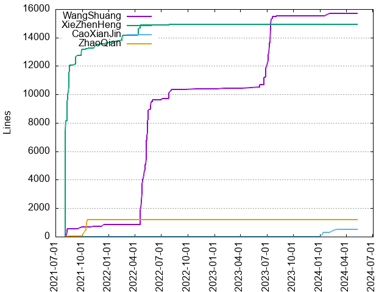
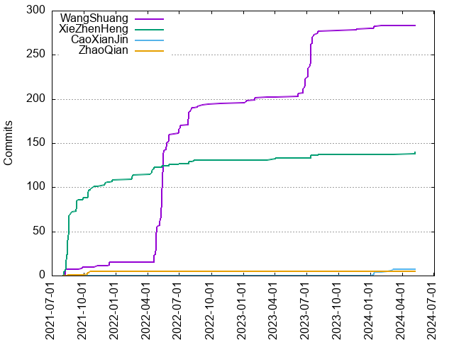

Authors
| Author | Commits (%) | + lines | - lines | First commit | Last commit | Age | Active days | # by commits |
|---|
| WangShuang | 283 (65.06%) | 15698 | 11560 | 2021-08-03 | 2024-02-01 | 912 days, 6:14:35 | 79 | 1 |
| XieZhenHeng | 140 (32.18%) | 14954 | 7152 | 2021-08-03 | 2024-05-07 | 1008 days, 5:52:54 | 54 | 2 |
| CaoXianJin | 7 (1.61%) | 518 | 592 | 2024-01-09 | 2024-03-06 | 56 days, 23:11:23 | 6 | 3 |
| ZhaoQian | 5 (1.15%) | 1204 | 22 | 2021-08-15 | 2021-10-18 | 63 days, 23:33:11 | 4 | 4 |


| Month | Author | Commits (%) | Next top 5 | Number of authors |
|---|
| 2024-05 | XieZhenHeng | 3 (100.00% of 3) | | 1 |
| 2024-03 | CaoXianJin | 1 (100.00% of 1) | | 1 |
| 2024-02 | CaoXianJin | 2 (66.67% of 3) | WangShuang | 2 |
| 2024-01 | CaoXianJin | 4 (66.67% of 6) | WangShuang | 2 |
| 2023-12 | WangShuang | 1 (100.00% of 1) | | 1 |
| 2023-11 | WangShuang | 2 (100.00% of 2) | | 1 |
| 2023-08 | WangShuang | 4 (80.00% of 5) | XieZhenHeng | 2 |
| 2023-07 | WangShuang | 49 (94.23% of 52) | XieZhenHeng | 2 |
| 2023-06 | WangShuang | 22 (100.00% of 22) | | 1 |
| 2023-04 | XieZhenHeng | 2 (100.00% of 2) | | 1 |
| 2023-03 | WangShuang | 1 (100.00% of 1) | | 1 |
| 2023-02 | WangShuang | 3 (100.00% of 3) | | 1 |
| 2023-01 | WangShuang | 3 (100.00% of 3) | | 1 |
| 2022-10 | WangShuang | 1 (100.00% of 1) | | 1 |
| 2022-09 | WangShuang | 2 (100.00% of 2) | | 1 |
| 2022-08 | WangShuang | 7 (77.78% of 9) | XieZhenHeng | 2 |
| 2022-07 | WangShuang | 21 (91.30% of 23) | XieZhenHeng | 2 |
| 2022-06 | WangShuang | 12 (80.00% of 15) | XieZhenHeng | 2 |
| 2022-05 | WangShuang | 96 (98.97% of 97) | XieZhenHeng | 2 |
| 2022-04 | WangShuang | 41 (82.00% of 50) | XieZhenHeng | 2 |
| 2022-02 | XieZhenHeng | 6 (100.00% of 6) | | 1 |
| 2021-12 | XieZhenHeng | 4 (50.00% of 8) | WangShuang | 2 |
| 2021-11 | XieZhenHeng | 3 (75.00% of 4) | WangShuang | 2 |
| 2021-10 | XieZhenHeng | 13 (76.47% of 17) | ZhaoQian | 2 |
| 2021-09 | XieZhenHeng | 16 (84.21% of 19) | WangShuang | 2 |
| 2021-08 | XieZhenHeng | 72 (90.00% of 80) | WangShuang, ZhaoQian | 3 |
| Year | Author | Commits (%) | Next top 5 | Number of authors |
|---|
| 2024 | CaoXianJin | 7 (53.85% of 13) | XieZhenHeng, WangShuang | 3 |
| 2023 | WangShuang | 85 (93.41% of 91) | XieZhenHeng | 2 |
| 2022 | WangShuang | 180 (88.67% of 203) | XieZhenHeng | 2 |
| 2021 | XieZhenHeng | 108 (84.38% of 128) | WangShuang, ZhaoQian | 3 |